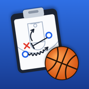

CoachPal Privacy Policy
Last updated: November 11, 2026
CoachPal is an app that helps basketball coaches organize teams, practices, drills, plays and games. This policy explains what information CoachPal stores, why, and how you can delete it.
What we store
- Account information: your email address and a user ID, from the sign-in method you choose (email and password, Sign in with Apple, Google or Facebook). If you use Sign in with Apple and choose to hide your email, we only see Apple's private relay address.
- What you add to the app: teams and players (names, jersey numbers, positions, height, dominant hand and the skill ratings you give them), drills, practice plans, plays, games (opponents, dates, locations, scores, video links and notes), and photos of game sheets you choose to take or pick from your photo library.
- Sign-in time: when you last signed in, to keep your account working.
CoachPal does not collect your location, contacts, or any analytics, advertising or tracking data, and it does not show ads.
How it's used
Your information is used only to sign you in and to save and sync your coaching data across your devices. We do not sell your information or share it with anyone for advertising or marketing.
Where it's kept
Your data is stored with Google Firebase (Firebase Authentication and Cloud Firestore), which processes it on our behalf. Only you can read or change the data in your account. If you sign in with Apple, Google or Facebook, that company also handles the sign-in under its own privacy policy.
Camera and photos
CoachPal uses the camera, and the photo picker, only when you choose to add a photo of a game sheet. Only the photo you take or pick is saved, to your account.
Address suggestions
When you type a game location, the text you type is sent to Apple Maps to suggest matching places. Apple handles this under its own privacy policy.
Deleting your data
You can delete your account and everything in it at any time in the app: tap the person icon at the top of any tab, then Delete Account. This permanently removes your account and all your teams, players, drills, practices, games, plays and photos. If you signed in with Facebook, this is also how to remove the data CoachPal stored from your Facebook login.
Children
CoachPal is meant for coaches and is not directed to children under 13. Coaches may enter their players' names; please only enter what you need to run your team.
Changes
If this policy changes, we'll update it here and change the date above.
Contact
Questions about privacy: coachpal.support@gmail.com